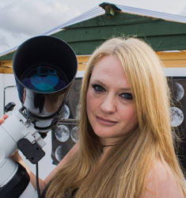

With Mary McIntyre, FRAS
Saturday 17th March
10am -12:30pm at Tooley's Boatyard, Banbury

|
 |
This introductory course
covers using compact, bridge & DSLR cameras, and
photographing with a wide angle or zoom lens and at the
telescope.
Mary starts with wide field photography of
Constellations, The Milky Way, Star trails, Aurora,
Noctilucent clouds, Meteors, Satellite passes &
Iridium flares. Then she moves on to discuss photography
with a zoom lens, including the Moon, star clusters and
deep sky objects. She also covers photographing objects
through a telescope, including afocal photography with a
compact camera and bridge camera, and prime focus
photography with a DSLR and T-ring & adpater. Mary
will show you how to image the Moon, the Sun, and deep
sky objects through a telescope.
Mary will also cover the basics of image processing,
with both the simple Windows photo editing software and
paid-for tools like Lightroom to show the difference it
can make to a simple image. Finally Mary will provide
an introduction to stacking - don't worry, its not as
difficult as it sounds!
Read more about Mary in her
bio here.
More of her images can be found on her website here
|
|